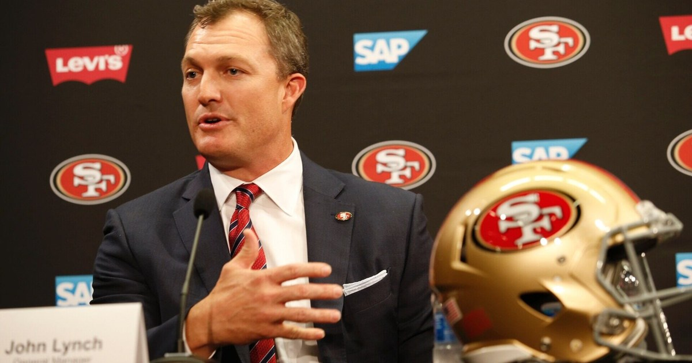

49ers lock up GM John Lynch with a contract extension — the Shanahan-Lynch braintrust stays together
Hours before the 49ers rolled the Vikings in Mexico City, San Francisco finalized a contract extension with general manager John Lynch — keeping the architect of one of the NFL's best teams in place for the foreseeable future.

Disclosure: this post contains affiliate links. I earn a commission on qualifying purchases.
The move
The 49ers are not letting their general manager get away.
San Francisco finalized a contract extension with John Lynch shortly before Sunday's game against the Vikings in Mexico City, Fox Sports' Jay Glazer reported. NFL Network's Ian Rapoport also reported the agreement. Lynch will remain the team's president of football operations and general manager for the foreseeable future.
No terms were announced, and no length was disclosed — just that the deal is done and the braintrust stays intact.
The timing said plenty. Hours after the extension was finalized, the 49ers went out and dismantled Minnesota 35-10 in Mexico City to improve to 9-1, tied for the best record in the NFL.
The partnership
Lynch and head coach Kyle Shanahan arrived in San Francisco together in 2017, and they have been extended in lockstep ever since — joint extensions in 2020 and again in 2023, and now a third round. Shanahan quietly signed his own extension in September, believed to run through 2027.
Lynch needed this one. His contract was set to expire after this season, and owner Jed York had said at the league meetings in March that he wanted both men around for a "very long time." Now both are under contract going forward.
The record
The results make the case for the extension on their own. Under Lynch, the 49ers are 91-68, with five playoff berths and two Super Bowl appearances.
Lynch came to the job from an unusual place — the Fox broadcast booth, straight into the GM chair, with no front-office experience. A Pro Football Hall of Fame safety who won a Super Bowl with the Tampa Bay Buccaneers during a 15-season playing career, he was hired in 2017 to rebuild a 2-14 team. Nine years later, that team is 9-1 and tied for the best record in the NFL.
What it means
This is a stability move, and stability is the whole point. The 49ers have had the same coach and general manager for a decade, and the league's best record is the payoff. With Shanahan locked up in September and Lynch now extended, the two men who built this roster will be the ones deciding what comes next — including the question of whether this 9-1 start turns into the Super Bowl run that has eluded them twice.
Sources
• 49ers Extend GM John Lynch (Pro Football Rumors)
• 49ers Agree To Contract Extension With GM John Lynch (NFL Trade Rumors)
• 49ers owner addresses contract statuses for head coach, GM (Niners Wire / USA Today)
Gear up: Fanatics